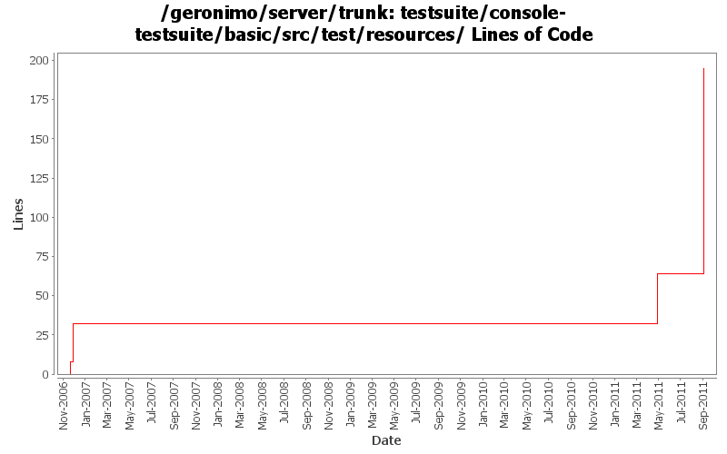

[root]/testsuite/console-testsuite/basic/src/test/resources

| Author | Changes | Lines of Code | Lines per Change |
|---|---|---|---|
| Totals | 8 (100.0%) | 211 (100.0%) | 26.3 |
| xiaming | 4 (50.0%) | 173 (82.0%) | 43.2 |
| jdillon | 2 (25.0%) | 29 (13.7%) | 14.5 |
| prasad | 2 (25.0%) | 9 (4.3%) | 4.5 |
Update link.properties because some of console links is changed
3 lines of code changed in 1 file:
Revise console-testsuite, provided by Liu Jun
138 lines of code changed in 2 files:
GERONIMO-5787 fix admin console testsuite problem, patch provided by LiWenQin
32 lines of code changed in 1 file:
Std props
1 lines of code changed in 1 file:
* using the foo.bar format for test name so that foo shows in the reports instead of a blank.
1 lines of code changed in 1 file:
Dropped jdk14 testng javadocs
Using @Test for class (clarity)
Using Surefire 2.3-SNAPSHOT, as that appears to work with TestNG w/JDK 1.5 annos
Using consistent spacing between elements
Dropped unused maven-invoker-plugin config
Put versioning of plugins all in the top-level build/pluginManagement
Added missing license on new xml files
28 lines of code changed in 1 file:
* moved maven-compiler-plugin to use jdk15 for source and target.
* moved tests in console and deployment suites to use TestNG annotations.
* introduced testng.xml for basic and test-deployments testsets.
* all tests now run and pass successfully.
8 lines of code changed in 1 file: